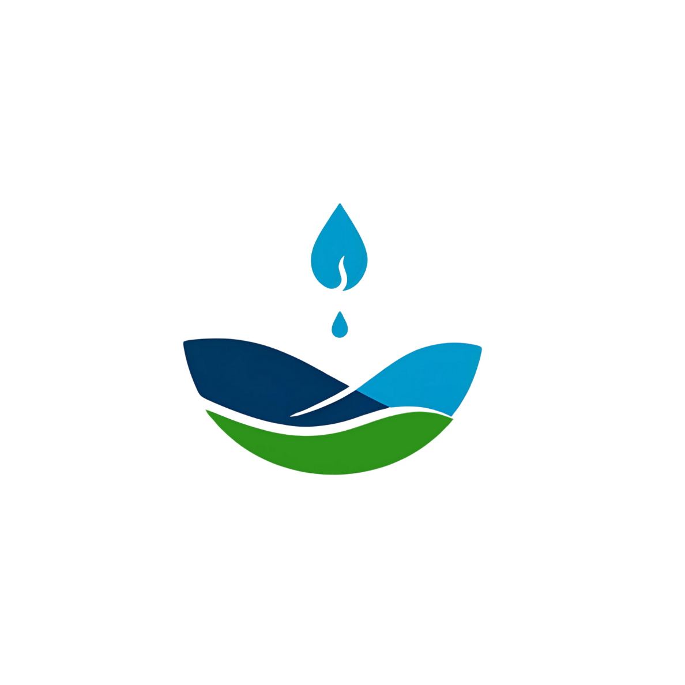

Sobre a Flumen
A Flumen executa estudos e pesquisa em ambientes aquáticos, e em 2026 completará 15 anos de atuação no mercado!
Continue conosco nesta jornada e saiba mais sobre nossa equipe e nossos serviços!
Saiba mais sobre nossa equipe Saiba mais sobre nossos serviços
